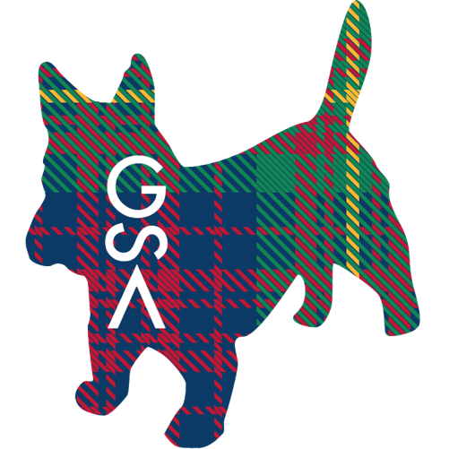

FluggleBurgh is a 3-day festival for all circus and skill arts hosted by Pittsburghs juggling, acro, and flow arts community (fluggle = flow + juggle). It will be held at the Community Forge Space, a former school, in Wilkinsburg PA, just outside of Pittsburgh. FluggleBurgh will provides a communal practice space with tall ceilings, numerous classrooms with scheduled workshops all weekend, outdoor practice and fire space (weather permitting), object manipulation games/competition, and two shows. All walks of object manipulation and movement arts are welcome.
In spirit, it is a successor of the Not Quite Pittsburgh Juggling Festival (2008-2015).
Our big goal of this festival is to bring the various communities around circus arts and other skills from Pittsburgh and beyond together, share workshops, and showcase the various skills in a show. We expect plenty of juggling, acrobatics, aerial, and flow workshops, as well as some clowning, balloons, and maybe even magic and pogo.
Gym times (open practice, workshops)
Friday Nov 10, 5pm-1am
Saturday Nov 11, 9am-6pm and 9:30pm-1am
Sunday Nov 12, 10am-3pm
Shows
Friday Nov 10, 8pm: Free Fire Show, outside (free)
Saturday Nov 11, 7pm-9pm: Public Show at the Winchester Thurston School (10$)
The fire show will be outside on the grounds of the Community Forge space; it will be canceled or moved in case of heavy rain. The Saturday show will feature juggling, flow, acro, aerial, and clowning acts, many of them local to the Pittsburgh area. The exact lineup will be a surprise, but it will be moderated by our own O’Ryan McGowan-Arrowroot and will include acts from Christian Kloc, Trevor Pearson, Taylor Haverty, Garrett Borawski, and the Steel City Clown Brigade. Show tickets can be bought at the door for 10$ or 5$ discounted (cash only). Doors open 30 min before the show.
Other activities
Saturday Nov 11, 3pm: Beginner workshops
Saturday Nov 11, 11pm: Fire jam (weather permitting)
Sunday Nov 12, 1pm: Games
Workshop Schedule
A preliminary schedule is now available. We have five parallel workshop tracks curated by the corresponding communities. Details may change closer to the festival or at the festival.
We will have beginner workshops (no prior experience required, open to the general public) throughout the weekend with most of them around Saturday 3pm (yellow in the schedule).
Main Location & Fire Show: Community Forge: 1256 Franklin Ave, Pittsburgh, PA 15221
Getting there: The space is directly located off I376 exit 78B; parking on site and on street. It is well reachable with public transportation with multiple bus lines (e.g., P1, P3, 67, 69, 61A, 71D). Restaurants and hotels are plenty within a 10 to 15 min drive. See map below.
Public Show Location: Winchester Thurston School: 555 Morewood Ave, Pittsburgh, PA 15213
Getting to the show: The show is about a 15 min drive away and also well reachable by public transportation (e.g., P1, 69). There are many restaurants near the show space or on the way. See map below. If you need help getting there, ask us.
We greatly appreciate the sponsorship from the CMU Graduate Student Assembly (GSA) and CMU Division of Student Affairs (DOSA). All CMU students qualify for discounted show tickets.
